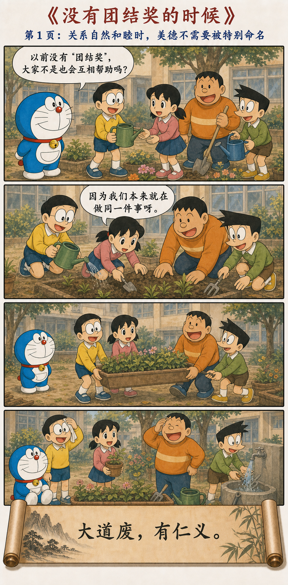
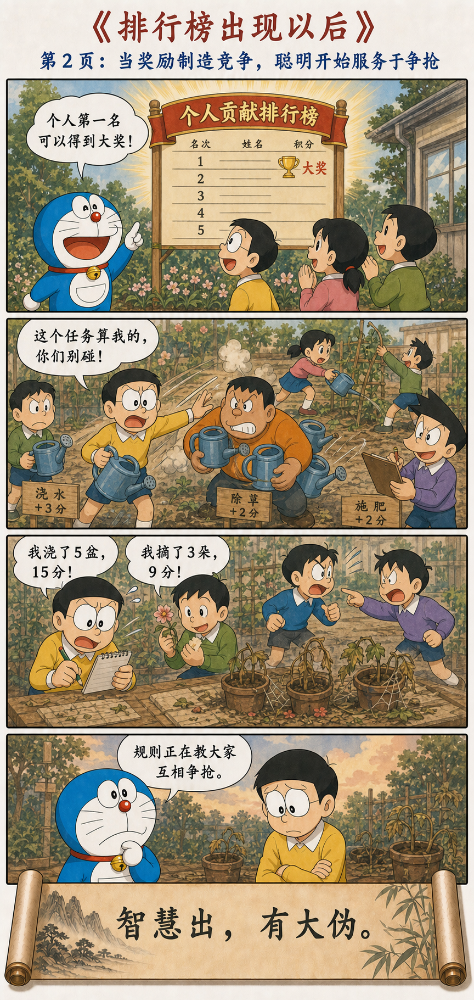
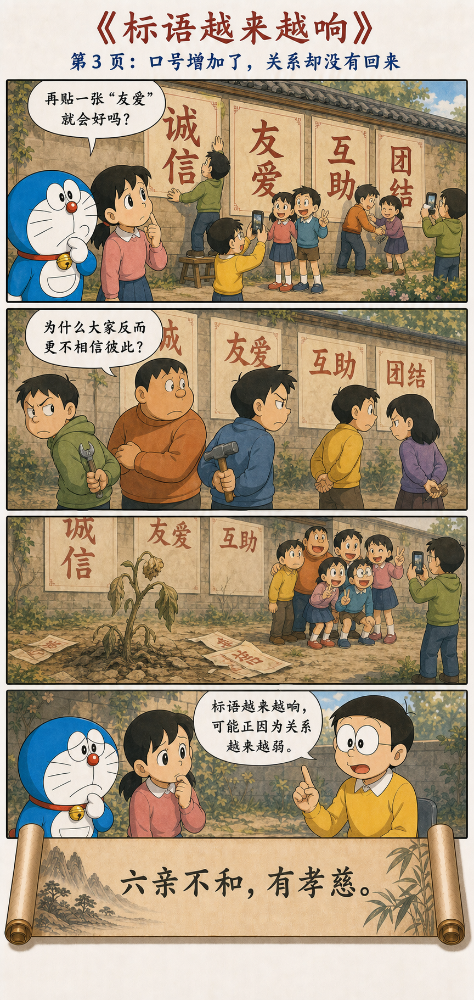
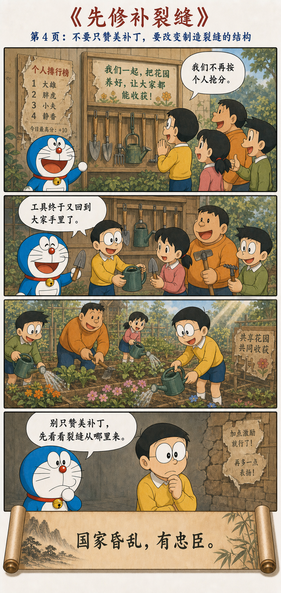

关系失序以后，美德才被高声命名
大道废，有仁义；智慧出，有大伪；六亲不和，有孝慈；国家昏乱，有忠臣。
一句赞美，也可能暴露它所修补的问题
大道被废弃以后，仁义才被特别提倡；机巧的聪明出现以后，巨大的伪饰也随之出现；亲人之间不和，才格外强调孝慈；国家秩序混乱，才显出所谓忠臣。
老子不是简单贬低仁义、孝慈或忠诚，而是在追问：为什么这些本该自然存在的关系，忽然需要被反复命名、奖励和表演？补丁当然可以救急，但补丁的出现也证明原来的结构已经破裂。
从自然合作，到口号越来越响




“有仁义”为什么出现在“大道废”之后
花园里没有“团结奖”时，大家因为共同目标自然递水壶、搬花盆。合作已经在关系里，不必另外竖起一个名字。排行榜出现后，任务被切成个人分数，工具被当成竞争资源，原来的关系才开始瓦解。
这时再提倡“团结”，并非完全无用；但如果只增加奖章与口号，不改变让人争抢的规则，仁义便可能成为遮住裂缝的一层装饰。
规则教人争抢以后，聪明就会用来钻规则
“智慧出，有大伪”里的“智慧”，不是知识、学习和理性本身，而是脱离整体关系、只追求局部获利的机巧。个人贡献被量化后，每个人自然会学习怎样占任务、藏工具、展示功劳。
当指标取代目标，聪明人最快学会的往往不是怎样把花园养好，而是怎样让自己看起来贡献最多。造假不一定从坏人开始，也可能从一个会奖励错误行为的制度开始。
越需要高声强调的东西，可能越已经稀缺
这不是说所有口号都虚伪，而是要把口号也当成一种诊断信号：它为何在此刻被提出？它正在弥补什么？不解决原因，声音越大，表演空间也可能越大。
这一章不是反对善良，也不是嘲笑忠诚
关系已经破裂时，仁义可能保护弱者；秩序混乱时，忠诚与勇气也可能阻止更坏的结果。老子批评的不是这些品质本身，而是只赞美少数救火者，却不追问为什么火灾反复发生。
真正尊重“忠臣”，不是永远让他独自填补制度缺口；真正珍惜“孝慈”，也不是让一个词掩盖家庭中的控制、忽视与不公平。
每当想增加一次宣传，先检查一次结构
团队不协作，先看目标是否冲突；员工不分享信息，先看分享是否让他承担额外风险；孩子只在奖励前行动，先看大人是否把所有关系都变成了交换。
把个人排行榜改回共同目标，把被争抢的工具放回共享架，并不保证人性从此完美，却至少停止了系统持续制造对立。
从美德的名字，回到美德生长的关系
第十八章让我们对响亮的好词多问一步：它是自然关系的表达，还是关系破裂后的包装？补丁可以留，但更重要的是修复裂缝，让合作、信任和照顾重新成为不用表演的日常。
最好的团结，不是墙上的字，而是水壶重新回到每个人手里。